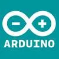

<!DOCTYPE html>
<html>

<head>
  <meta charset="utf-8">
  <title>Layui</title>
  <meta name="renderer" content="webkit">
  <meta http-equiv="X-UA-Compatible" content="IE=edge,chrome=1">
  <meta name="viewport" content="width=device-width, initial-scale=1, maximum-scale=1">
  <link rel="stylesheet" href="./resources/layui/css/layui.css" />
  <!-- jquery文件必须写在其他js文件之前,否则会报错!! -->
  <!-- <script src="./js/jquery-3.5.1.min.js"></script> -->
  <script src="./resources/layui/layui.js"></script>
</head>

<body>

  <table class="layui-table" id="layui_table_id" lay-filter="dataTable"></table>

  <!--绑定每一行右侧操作 -->
  <script type="text/html" id="barDemo">
    <a class="layui-btn layui-btn-xs" lay-event="detail">查看</a>
    <a class="layui-btn layui-btn-xs" lay-event="edit">编辑</a>
    <a class="layui-btn layui-btn-danger layui-btn-xs" lay-event="del">删除</a>
  </script>

  <script>
    layui.use(['table', 'form'], function () {
      var table = layui.table;
      // var laypage = layui.laypage
      var form = layui.form;

      table.render({
        elem: '#layui_table_id',//指定表格元素
        id: "dataTable",
        cellMinWidth: 20, //全局定义常规单元格的最小宽度，layui 2.2.1 新增
        skin: 'line ' //表格风格 line （行边框风格）row （列边框风格）nob （无边框风格）
        //,even: true    //隔行换色

        , url: './json/demo1.json' //请求路径
        , page: true  //开启分页
        , limits: [10, 20, 50]  //每页条数的选择项，默认：[10,20,30,40,50,60,70,80,90]。
        , limit: 10 //每页默认显示的数量
        , cols: [[
          { type: 'checkbox' }, //开启多选框
          {
            field: 'id', //json对应的key
            title: 'ID',   //列名
            width: 120,   //列宽度
            sort: true   // 默认为 false,true为开启排序
          }
          , { field: 'username', title: '用户名', width: 120, edit: 'text' }
          , { field: 'sex', title: '性别', width: 80, edit: 'text', sort: true }
          , { field: 'city', title: '城市', width: 100 }
          // 在表单中插入图片，且可以点击展示
          , {
            field: 'img',
            title: '图片',
            unresize: true,
            sort: false,
            //layer-src layui的大图展示
            templet: function (d) {
              return `<div class="layer-photos-demo" onclick="img_click()" style="cursor:pointer;">
                                      
                                    </div>`;
            }
          }
          // 在表格中插入表单组件-开关
          /*
          !! value = "${d.id}"  ===   value = "` + d.id + `"
          */
          , {
            field: 'menuDisplay',
            title: '是否显示',
            width: 215,
            align: 'center',
            unresize: true,
            filter: "isShow",
            sort: false,
            templet: function (d) {
              if (d.menuDisplay == 'Y') {
                return ` <input type="checkbox" name="yyy" lay-skin="switch"  value = "${d.id}"  lay-text="ON|OFF" checked> `;
              } else {
                return ` <input type="checkbox" name="yyy" lay-skin="switch"  value = "` + d.id + `" lay-text="ON|OFF" >  `;
              }
            }
          }

          , { fixed: 'right', title: '操作', width: 215, align: 'center', toolbar: '#barDemo' }
        ]]

        , done: function (res, curr, count) { //表格数据加载完后的事件
          //调用示例
          layer.photos({//点击图片弹出
            photos: '.layer-photos-demo'
            , anim: 1 //0-6的选择，指定弹出图片动画类型，默认随机（请注意，3.0之前的版本用shift参数）
          });
        }
      });


      //监听工具条
      table.on('tool(dataTable)', function (obj) { //注：tool是工具条事件名，test是table原始容器的属性 lay-filter="对应的值"
        var data = obj.data //获得当前行数据
          , layEvent = obj.event; //获得 lay-event 对应的值
        if (layEvent === 'detail') {
          console.log(data)
          // layui.alert(JSON.stringifr(data)); //将编辑的行信息转为json字符串
          // layer.msg(data.attrId);
        } else if (layEvent === 'del') {
          layer.msg('删除' + data.id);
          console.log(table)
        } else if (layEvent === 'edit') {

        }
      })

    });


  </script>

</body>

</html>